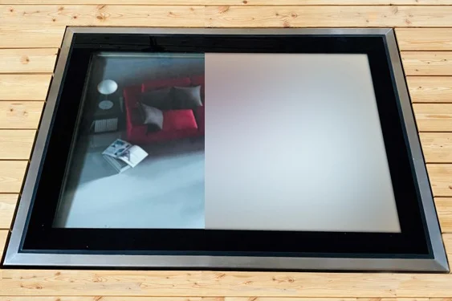
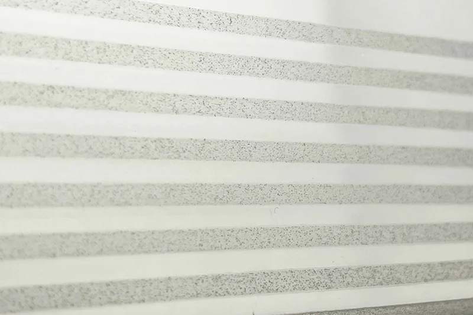
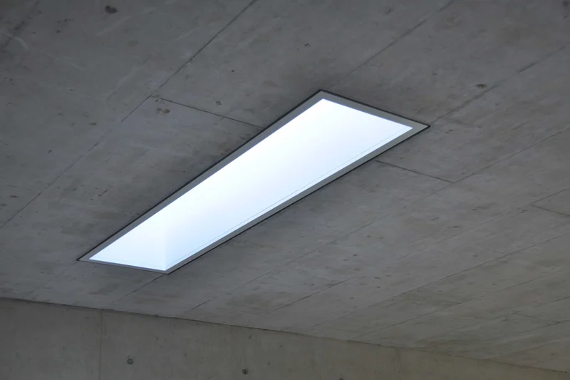

Pochozí světlík na míru a výbava podle situace.
Standardní rozměry pokrývají běžné případy. Když se do nich stavba nevejde, vyrobíme kus podle ní. A výbavu nevybíráme z ceníku, ale podle toho, co se pod sklem a nad ním děje.
Vyrobeno na míru
Standardní rozměry pokrývají běžné případy. Pokud se do nich stavba nevejde, vyrábí se kus na míru od 40 cm, ve tvaru čtverce, obdélníku i kruhu. Rozhoduje skladba konstrukce, způsob napojení a zatížení, ne katalog.
Pošlete nám řez nebo půdorys. Nejprve posoudíme, zda je GLASSFLOOR pro danou konstrukci vhodný, a teprve potom navrhneme konkrétní provedení.
- Tvar a rozměr – čtverec, obdélník i kruh, od 40 cm bez horní hranice
- Únosnost – včetně přeneseni extrémního zatížení nebo pojezdu
- Umístění – venkovní plocha i vnitřní strop mezi podlažími
- Elektronika ve skle – vyhřívání, senzory, osvětlení, zmatnění na povel
Když stavba potřebuje víc.
Doplňky nevybíráme z ceníku. Vychází z toho, co se pod sklem děje a co se nad ním chystá. Níže je devět situací, které řešíme nejčastěji.
Pod světlíkem je vytápěný prostor
Izolační trojsklo Super ISO drží Ug 0,5 W/m²K. K němu systémový izolační rám, aby v místě osazení nevznikl tepelný most.
Sklo se rosí nebo na něm leží sníh
Vyhřívané sklo, zvenku i zevnitř. Senzor kondenzátu a senzor sněhu spínají vyhřívání samy, jen když je potřeba.
Chodí se po něm za mokra
Protiskluzová úprava potiskem na horní straně skla. Není to nálepka ani rohoví, je součástí tabule.
Pod sklem má být soukromí
PRIVA-LITE® se na povel zmatní a zase vyčeří. Kde stačí trvalé řešení, použijeme matnou nebo dekorativní úpravu skla.
Plocha je na jižní stranu
Protisluneční zasklení sníží prostup energie, aniž by prostor pod ním ztratil denní světlo.
Přes plochu se má i jezdit
Pojezdové provedení pro vjezdy a dvory. Únosnost se navrhuje ke konkrétnímu zatížení, ne podle katalogu.
Má to fungovat i po setmění
LED osvětlení integrované do rámu, s ovládáním. Ze světlíku se večer stane světelný prvek terasy.
Je to v dosahu z ulice
Zasklení je bezpečnostní ze základu, třída odolnosti P8B. Navíc lze doplnit poplachové sklo napojené na domácí systém.
Světlík končí těsně u fasády
Fasádní provedení řady chrome řeší napojení na stěnu včetně klempířského detailu. Řez ke stažení.



Výbava se dá kombinovat napříč řadami i s požární variantou FIRESTOP. Co dává smysl právě u vaší stavby, řekneme po prohlédnutí řezu.
Co lidé u zakázek zjišťují.
Jaký nejmenší rozměr se dá vyrobit na míru?
Od 40 cm, bez horní hranice. Čtverec, obdélník i kruh.
Dá se kus vyrobit na hotový otvor?
Ano. GLASSFLOOR umí vyrobit kus přesně na hotový otvor. Rozhoduje skladba konstrukce, způsob napojení a zatížení, ne katalog.
Jaké doplňky se k pochozímu světlíku nabízejí?
Izolační trojsklo, systémový izolační rám, protiskluzová úprava, PRIVA-LITE, vyhřívané sklo se senzory, protisluneční sklo, LED osvětlení, pojezdové a poplachové sklo. Co dává smysl u vaší stavby, řekneme po prohlédnutí řezu.
Kolik GLASSFLOOR stojí?
GLASSFLOOR je zakázkové řešení bez ceníku, cena vychází z technického návrhu konkrétního kusu. U menších standardních formátů začíná kolem 100 000 Kč.
Máte stavbu, která se do katalogu nevejde?
Pošlete nám řez nebo půdorys. Nejprve posoudíme, zda je GLASSFLOOR pro konstrukci vhodný, a teprve potom navrhneme konkrétní provedení.
Údaje o rozměrech, doplňcích a požární odolnosti vycházejí z podkladů výrobce Heliobus AG platných k 1. 9. 2026. Závazné jsou vždy podklady ke konkrétní zakázce.